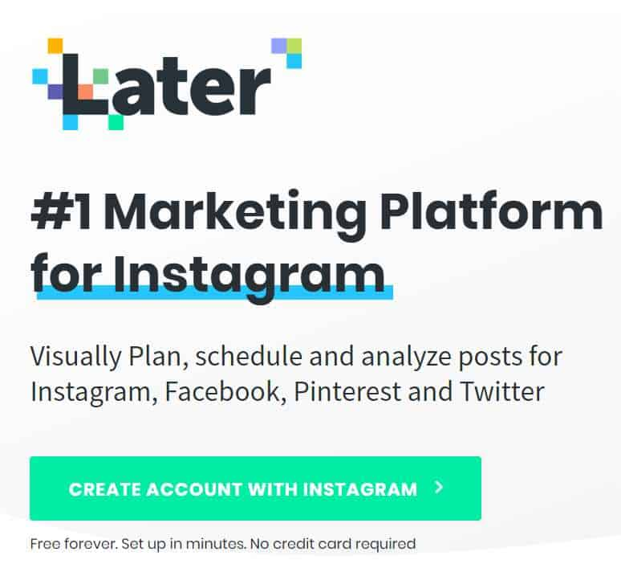
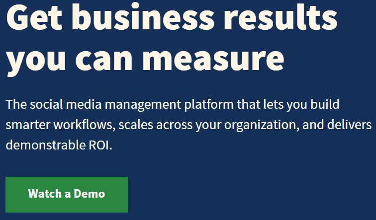
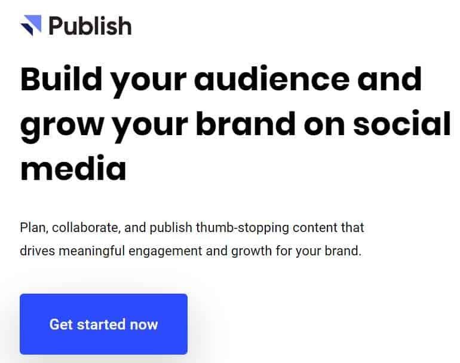
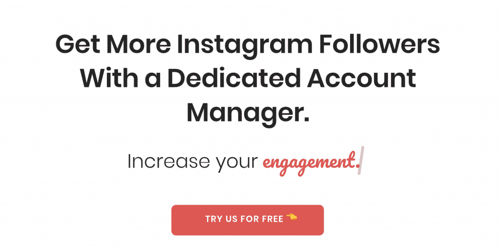
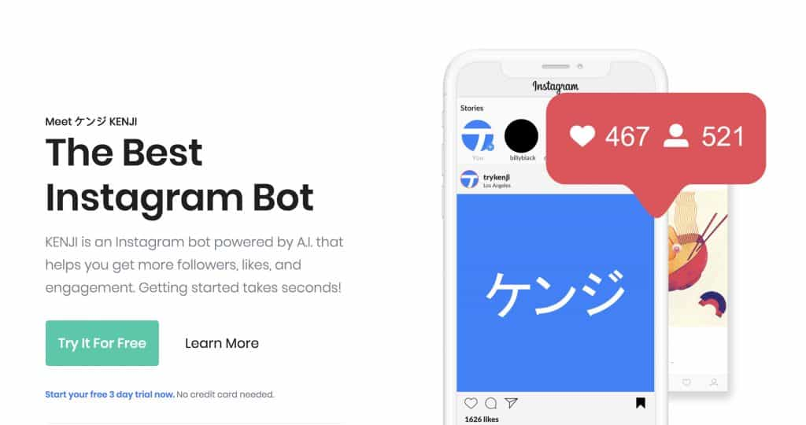

Are you getting tired of tedious social media marketing tasks? Looking for a way to automate activity? Let’s face it, nobody likes spending their entire day on social media. You’re in luck. There are plenty of social media automation tools that can take a load off your shoulders.
The problem is there are hundreds of tools and services to choose from. It can be a hassle figuring out which one is best. I’m sure you already have had bad experiences with tools that promise complete social media automation.
To save you the trouble, we went ahead and did the research. We tried, tested, and compared more than 50 tools, and narrowed it down to what we think are the best choices. But before we get into that list, there are a couple of things to keep in mind.
Is Social Media Automation Safe?
For the most part, if kept on a small-scale, social media automation is perfectly safe. On the other hand, problems can arise when you are too aggressive, and your marketing falls more into spam territory. When that happens, the platform you’re on will usually temporarily block your account.
The point is to automate the tedious tasks while still maintaining the human connection with your fans. For example, you might use a tool to schedule content, but you can manually reply to messages and comments. To get the best results, it’s recommended to use a combination of automation and human interaction.
It also depends on the activity that you’re trying to automate. Certain types of activity are harmless to automate while others are frowned on. For example, scheduling content for upload is usually safe, while mass-sending direct messages are more on the spam side of things.
Long story short, if you want to keep your accounts safe, then use social media automation with caution.
What Tasks Can You Automate?
Now you’re probably wondering what type of tasks you can automate to make your life easier. I’ll provide some examples.
1 – Schedule Content
Scheduling content is probably one of the most useful. There are tools that allow you to schedule content to pretty much every social media platform, including Facebook and Twitter.
Why schedule content? Because you can upload content at the exact moment most of your audience is online. In some cases, if you don’t live in the same country as your target audience or your timezone is different, your work-hours won’t be in sync with your audience’s most active times.
What this means is you might be busy creating and posting content, but nobody is viewing the content because they’re asleep or at work. Scheduling content for precise peak hours of the day will make your marketing efforts a lot more impactful.
If you manage a Facebook page or a Twitter account, scheduling content can really help lighten your workload. You can schedule a month or more worth of content in one sitting and then you can relax. It makes things so much easier. I’ll mention some great schedulers later on in this article.
2 – Create a Chatbot for Facebook Pages
Speaking of Facebook pages, a new way to automate conversations would be to create a Facebook chat-bot. You might have seen these chatbots on some of your favorite Facebook pages. They can be incredibly helpful for providing quick answers to common questions.
Facebook has guides on how to build your own bot, and there are third-party tools that make the process easier too. That’s something to consider!
Here’s some more information on how to do that.
3 – Consider an Instagram Automation Tool
When it comes to Instagram, there are plenty of Instagram automation tools. You have to be careful because using certain bots can lead to undesirable results. In some cases, they can do more harm than good.
Although using an Instagram bot or automation service is a grey area, it can save you a lot of time. The trick is to find the right tools that work.
Most of the tools also don’t let you interact with your account when the bot is active, which ruins our 50/50 automation and human interaction ratio. But you can use a bot and only activate one or two of the services, for example, auto-like or auto-follow.
On that note, services like auto-likers don’t usually present much of a risk to your account. Liking is safer than mass following users or mass sending direct messages. It can also be quite useful.
4 – Automatically Post Content to Multiple Channel at Once
With Facebook, you can already post the same content to Instagram. Nevertheless, if you have to control more than one social media platform, having the option to post the same content to multiple channels at once is a huge plus.
Most social media automation tools allow you to connect, manage, and post content to multiple channels at once, saving you the time of logging into each one individually. It might not seem a huge timesaver, but you’ll be surprised.
Our Recommended Social Media Automation Tools
Now that you have an idea of how to use social media automation tools, here is a list of what we think are the best tools. These tools are all relatively inexpensive and work with most major social media platforms.
1 – Later

Later is a really innovative social media automation tool. It works with Instagram, Facebook, Pinterest, and even Twitter. What it does is allow you to schedule and publish content. It also provides useful post-insights such as view count and other performance metrics.
The absolute best thing about Later is their visual calendar style schedule. When you schedule a post, it will appear on the calendar with a thumbnail, so you can see your whole content plan for the month. And it works with every major social media platform.
You can schedule Tweets, Instagram posts, Facebook, and even Pinterest. Later is one of the most useful social media automation tools we had the pleasure of testing out. Highly recommended.
Not your cup of tea? No problem!
2 – Hootsuite

Hootsuite is another great social media automation tool, although it’s more geared towards businesses. Currently, Hootsuite can connect with over 35 social networks. Not only does it provide scheduling services, but also content curation, analytics, team management, and other features.
Hootsuite is an all-in-one social media management platform. You can also reply to comments and messages from individual social networks within their platform. It’s all in one place, making social media management a breeze.
One feature people love about Hootsuite is the content curation feature. When you install the Hootsuite plugin called Hootsuite Hootlet, it will provide you with the option to quickly share website links to your social media accounts, and even schedule them. Very cool.
3 – Buffer

Buffer is another social media automation tool with a content scheduling feature, called Buffer Publish. It works with Instagram, Facebook, Twitter, Pinterest, and Linkedin. Not as many social networks as Hootsuite, but it does work with the most popular ones.
Buffer has about the same features as the previous tools. It’s got three main products; Publish, Reply, and Analyze, as well as an all-in-one option.
With the Publish product, you can schedule content on all the major social networks. Reply allows you to quickly reply to messages, comments, and other forms of customer support. Finally, Analyze lets you track all the data and measure social media performance.
Overall, a great tool. Most people like Buffer because of its easy-to-use user interface. Everything is sleek, modern, and streamlined. Worth checking out.
Instagram Recommendations
Looking for an automation tool specifically for Instagram? We’ve got you covered.
1 – Upleap

Upleap is the closest you’ll get to hire a full-on social media marketer for your Instagram account. Upleap uses real account managers to engage with Instagram users on your behalf.
Essentially, they take control of your account and do the tedious tasks you hate. You can always track the performance and results of your account too. Upleap is one of our recommended Instagram automation tools, and it’s one of the safest too.
2 – Kenji

Kenji is an Instagram bot. I know, there is a stigma to using bots, and if you’re not comfortable with the idea, then you shouldn’t use one. On the other hand, bots can help a lot, especially at automating simple tasks. For example, Kenji can auto like other users’ posts, follower users, and whatnot.
If you’re looking to grow an Instagram account as quickly as possible, Kenji is worth looking into. Not sure? Take it for a test run. It has a free 3-day trial.
Notable Mention: RoboLike
RoboLike is a cool automation tool, specifically designed for Instagram. What it does is it automates the Like aspect of your work. One of your duties as a social media manager is probably to interact with other users by liking their content and whatnot.
RoboLike takes a list of your favorite hashtags and users and starts auto liking content for you. In other words, it kind of generates interest for your profile, completely automatic. The best part is Instagram doesn’t ban accounts for liking content, so it’s totally safe.
If you’re tired of hitting that like button on posts, let RoboLike do it for you. It is worth checking out.
What’s the Best Social Media Scheduler?
In our opinion, the best social media scheduler is Later. We feel like it is the perfect mixture of an easy to use platform with a great user-interface and plenty of features. It’s also relatively cheap – there’s even a free-forever version. It’s the best all-in-one social media automation tool.
Of course, the “best” is subjective. If you’re looking for a good social media automation tool, I suggest trying out several to see what you think. Most of them offer free trials, so there’s no risk. However, be mindful of the bots. There are some bots that will do a lot more harm than good. Or fill your profiles with spam and fake followers, which doesn’t help at all.
Thinking about buying Instagram followers? Read this.
How Can I Post to Multiple Social Media Sites for Free?
To post to multiple social media sites at the same time, you’ll need to use a third-party tool such as Later. The service is called multi-profile scheduling and it is incredibly useful. The other tools, Buffer and Hootsuite, offer similar services.
There are also free tools you can use, such as IFTTT which allows you to connect and automate a wide range of platforms. A couple of examples:
- Save Your Instagram Posts to Google Drive
- Post Your Instagram Photos to Tumblr
- Sync Instagram Posts to Pinterest
- Share Instagram Posts on Twitter
You can find some interesting “Recipes” on that website which can help automate your Instagram work.
Overall, though, I recommend using a premium tool, such as Later.
The Bottom Line of Social Media Automation
Wrapping it up, the bottom line is you can use social media automation to gain an advantage in the increasingly competitive social media industry. Most marketers are already using these tools. There’s no way to keep up with your competition with manual labor.
Spend less time dealing with publishing and more time on content creation. If you focus more of your efforts on creating awesome content, combined with a good social media automation tool, your marketing will have that extra kick that will take it much further.
Overall, social media automation can be great for your business. The trick is to figure out which tools work best, and how to make the most of them. The tools mentioned in this post should put you on the right path. Thanks for taking the time to read this article. I hope you learned a thing or two about social media automation.
Until next time! Good luck!